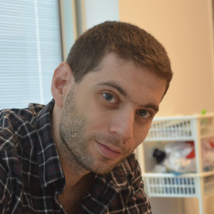
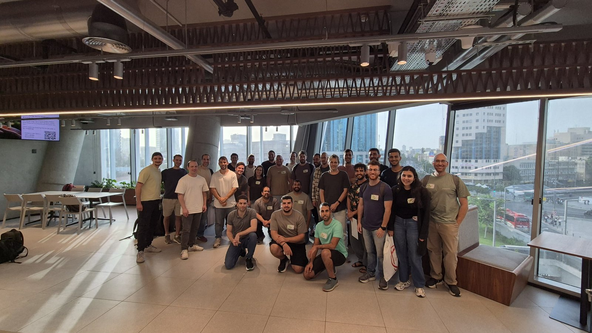
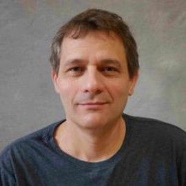
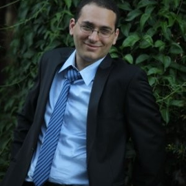
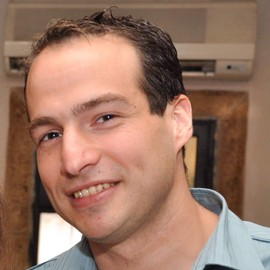
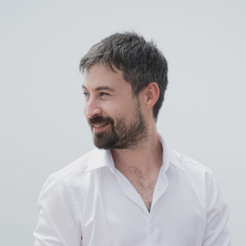
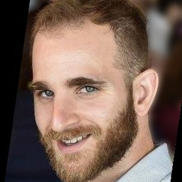
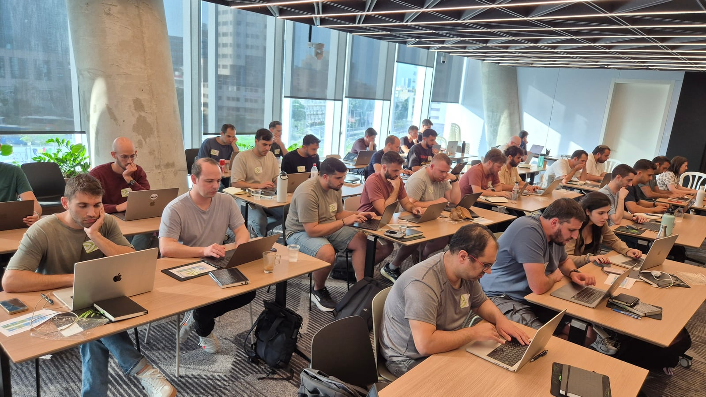

Ido GreenbergNVIDIA
A five-day, in-person course for PhD students in machine learning, held at NVIDIA’s offices in Tel Aviv in October 2026. The course materials are now being shared freely online.

RL for Real connects the foundations of reinforcement learning to their practical applications, with in-depth coverage of LLMs and robotics.
Lecture recordings, slides and hands-on code exercises.
Knowledge of machine learning and experience writing ML code. No prior RL experience is required. Some exercises require a GPU, as specified in their instructions.
The lecture recordings are in Hebrew. Slides and exercises are in English.
The original in-person course carried two academic credits at Bar-Ilan University (course 89953-01).
Modern RL is central to applications such as LLMs and robotics, but its role is not fully reflected in existing courses. We saw a gap between academia and practice: the algorithms taught in class often cannot be applied directly to real problems.
We believe that making RL better known and more accessible benefits our companies, the AI research community, and everyone who uses AI technology. We see sharing our experience as both a privilege and a responsibility.






Recording note: audience questions and comments are mostly inaudible. Slides are available for every lecture.
Ido GreenbergNVIDIA
Why reinforcement learning, and when should you use it?
Shie MannorNVIDIA · Technion
Tabular methods, value functions, and the foundations of sequential decision making.
Ido GreenbergNVIDIA
From tabular methods to deep networks, policy gradients, and actor-critic methods.
Gal DalalNVIDIA
Trust regions, PPO, and policy gradients today.
Ido GreenbergNVIDIA
How real applications drive the problem formulation and algorithm design.
Assaf HallakNVIDIA
Learning models of the environment to support better decisions.
Yonathan EfroniAAI · Tel Aviv University
From multi-armed bandits and optimism to deep exploration.
Eli MeiromNVIDIA
Learning to solve combinatorial problems, with vehicle routing as a case study.
Gal DalalNVIDIA
Real-world applications in datacenter networking.
Lior ShaniGoogle
RLHF, verifiable rewards, credit assignment, and agentic RL.
Aviv RosenbergGoogle
Formulating and optimizing generative modeling tasks with RL.
Chen TesslerNVIDIA
A hands-on introduction to making robots move.
Tom ShenkarMentee Robotics
No lectures match your search.
Three coding exercises to accompany the lectures.
Implement and run a state-of-the-art RL algorithm.
Open exerciseMake your GPT model view life in a more positive (or negative) light.
Open exerciseHow high can you bring the model score on a set of reasoning tasks?
Open exercise